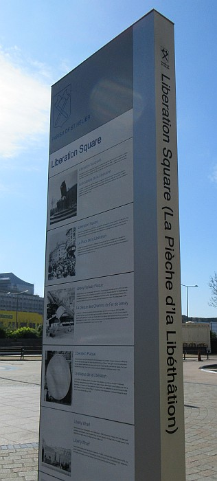

'J'n'y counnais rein, de chutte dgiablye de pliaque qu' i' sount en train d'mett' dans la Pliaiche de la Libérâtioun', s'fit le Ph'lip Desclios l'aut' sé, 'mais té, avais tu moyen hors pays d'la célébrer, la Libérâtioun'?
'J'n'y counnais rein, de chutte dgiablye de pliaque qu' i' sount en train d'mett' dans la Pliaiche de la Libérâtioun', s'fit le Ph'lip Desclios l'aut' sé, 'mais té, avais tu moyen hors pays d'la célébrer, la Libérâtioun'?
'Le jour même,' j'lis dis, 'j'tais érvenu dé l' Amérique et j'tais à Loundres à la Foreign Office, et j'entendis la fameuse announce de Winston Churchill. Mais dans l's'autres pays' sinoun Singapour, n'y'avait persounne à celebrer avec. Prends par exemplye l' Afghanistan et la Thailande, persounne là n'en avaient même entendu pâler et n'éthaient pas seu tchiq chlà voulait dithe, En Amérique y'avait des sociétés Jèrriaises dans bein des pliaiches, mais j'n'eus jamais moyen d'les rencountrer.
Mais à Singapour y'avait eun buoan djèrnésiais, le Maréchal de l'Air Peter Le Cheminant, et eune annee j'décidîmes, li et mé, d'aver eune réceptioun pour touas les siens là qui 'taient d'nos îles ou qu'avaient tchique rapport avec. Ou' s'rait t'nue dans ma maisoun et gardîns à Eden Hall.
 J'announcîmes dans les gazettes que touas les siens à Singapour qui 'taient qualifiés s'raient les beinv'nus. Drôle de chose, mon Ph'lip, mais i' paraît qu'au mains pour chu jour là des chentaines et chentaines de persounnes à Singapour trouvîtent que lus gandpèthe, grand'mèthe ou enfin tchiqu'autre anchêtre 'té sorti des Iles. Ma maisoun et gardîns fûtent remplyis d'mounde, nou'n'pouvait à peine bouogi! I' paraît même qué l's officiérs des navithes angliais dans l'port avaient affichi l'announce sus l'mât d'lus baté, et j'fûmes envahis, parmi tout l'reste d'la foule, par des chentaines de matelos.
J'pensaimes que j'avaimes amassé tout pliein d' bièthe etc, pour le p'tit d'mounde que j'attendaîmes, mais après chinq minutes j'trouvîmes bein vite qu'avec tréjous pus d'mounde qu'arrivaient, j'n'en avaiment pas eune chentiaime assez, et j'eûmes à toute hâte en faithe v'ner à peu prés eun mille de bouteilles.
Ah, tu pâles, mon Ph'lip, d'eune arlevée! Ou' duthit jusqu'à pus d'dgieix heuthes du sé, et quand à la fin tout l'mounde s'en fût le sieur Le Cheminant et mé j'n'en pouvaîmes pus, d'aver châtchi d'main et fait la beinv'nue à tant d'gens.
Mais quand même j'sais assez countent d'pouver li' dithe que je n' pouârrais pas célebrer la Liberatioun la préchainne année à Singapour, car par chu temps là mon séjour s'rait finit et je s'rais dans tchiqu' autre poste.
Bein seux, n'autcheun d'mes collègues diplomatiques ni d'ministre de gouvernément d'Singapour ne fûtent invités viyant qu'la bordée en 'tait seulement que pour les siens qu'avaient rapport avec nos îles, mais Lee Kuan Yew, le Preumi Ministre, en entendit pâler et i' fut bein amusé. 'Bonsens', i'm'dit tchiques jours pus tard, en s'ebouffant d'rithe. 'mais je n'savait pas qu' y'avait tant d'mounde à Singapour qui 'taient sortis des Iles Anglo-Normandes!
Nou' m'a dit que t'avais pus d'gens siez té chu jour-là que nou'n'a jamais veu pour le jour de naissance de la Reine! Même i'm'vint a la tête,' i' countinuit en riant. 'que les Britanniques n'avaient pas vraiment abandounné lus vièr countrôle sus nous. I' s'peu qu' sé servent d'mâlins Jèrriais coumme té i' tâchent de l'érprendre ichein à Singapour'.
Tchiques années pus tard, après aver 'tait mînt en értraite du RAF, ouesqu' finit coumme Maréchal en Chef, le sieur Le Cheminant, par chu temp-là Sir Peter, d'vînt Gouverneu' d'Guèrnésy, et après aver finit son terme là i' s'en fût d'meuther tchiques ans en Angliéterre, mais dépis il est érvenu passer ses jours paisiblyément dans s'n'île de naissance; j'lis telephonis la s'maine passée et j'passîmes eun buoan quart d'heuthe à nos érgaler, avec bein du fonne, d'not' grand' bordée à Singapour.
 Quant à mé, n'importe éyou que j'tais après dgieix neu' quarante chinque, j'tais tréjous en esprit avec touas les buoans Jèrriais le jour de la Liberatioun.
Quant à mé, n'importe éyou que j'tais après dgieix neu' quarante chinque, j'tais tréjous en esprit avec touas les buoans Jèrriais le jour de la Liberatioun.
Viyiz étout: